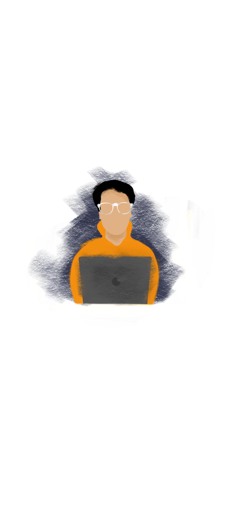

Hey, I am Aman Priyadarshi
I am a second year undergraduate student at Indraprastha institute of Information Technology Delhi, pursuing my bachelors in Computer Science and Design.
I love to create”, said the twelve year old me and says the twenty year old me too. Be it an artwork, a solution to some random problem or a robot, I love creating all of these with innovative ideas. I like exploring various domains of design and am particularly interested in